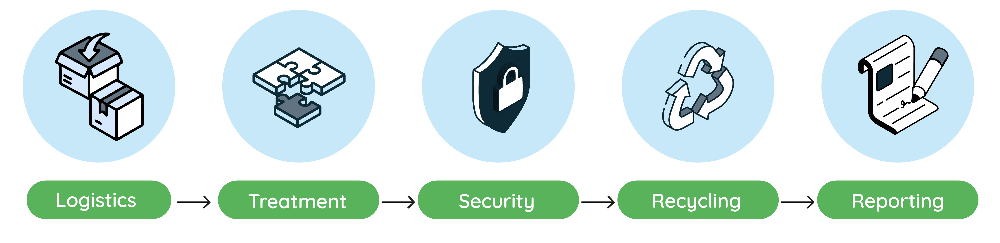
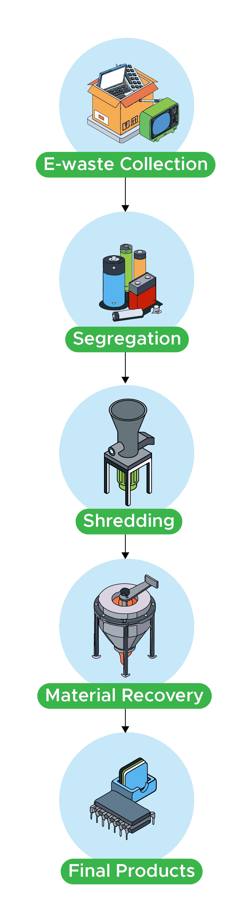
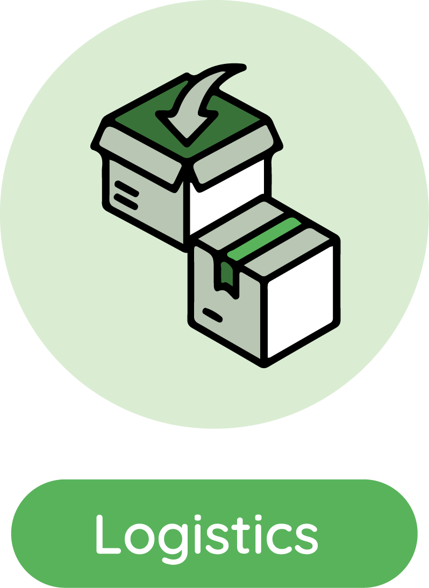
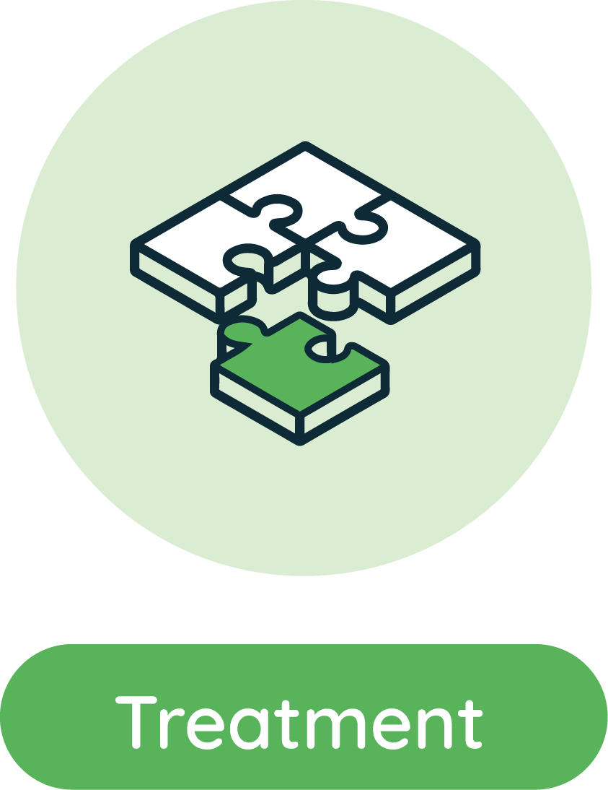
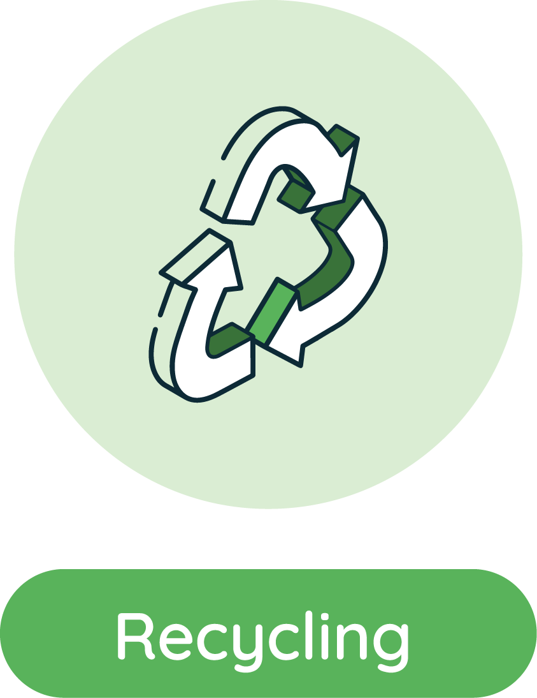

From onsite assessment to documented recovery, e2e supports corporate e-waste and ITAD programs across India. We are KSPCB registered, with verified Pan-India collection and logistics and coverage across Bengaluru, Chennai, and Hyderabad.



1. Assess scope We start with an onsite assessment or remote review of your sites, asset types, volumes, locations, and data-bearing equipment.
2. Plan collection and logistics We schedule collection across our verified Pan-India network, including Bengaluru, Chennai, and Hyderabad. Pickup timing, including same-day Bengaluru pickup, is subject to scheduling and volume.
3. Secure transport and intake We coordinate secure pickup, transport, and receiving so assets arrive ready for controlled processing under our compliance procedures.

4. Segregate assets and materials We separate reusable, repairable, data-bearing, recyclable, and regulated materials so each stream receives the appropriate next step.
Processing decision We route equipment and materials according to reuse potential, data risk, environmental impact, and applicable compliance requirements.
Efficiency Segregation maximizes material recovery and ensures
each
component is directed toward its appropriate recycling process.
5. Sanitize or physically destroy data media Data-bearing devices are securely sanitized or physically destroyed. e2e supports physical drive destruction and prototype destruction, with 100% data destruction and documentation for client records.
Safe handling Hazardous substances and sensitive components are identified and handled through appropriate compliant processing routes.
Compliance Security and environmental controls support compliant enterprise disposition, backed by e2e's KSPCB registration.

6. Recycle and recover materials Plastics, metals, glass, and other recoverable materials are directed to appropriate recycling and recovery streams, reducing landfill and supporting circular resource use.
Environmental outcome Responsible recovery keeps useful materials in circulation and reduces the environmental burden of unmanaged e-waste.
Recovery focus Each material stream is managed for responsible recovery and appropriate downstream processing.
Material responsibility We help organizations make measurable progress toward safer, more sustainable asset retirement.
7. Provide reports and certificates Clients receive detailed reports and certificates covering collected and recycled e-waste, material outcomes, and data destruction requirements.
Documentation Reporting helps IT, procurement, facilities, and compliance teams maintain compliance and sustainability records for retired assets.
Experienced delivery Our process is backed by 20 years of e-waste experience and 15 years of Pan-India logistics expertise.